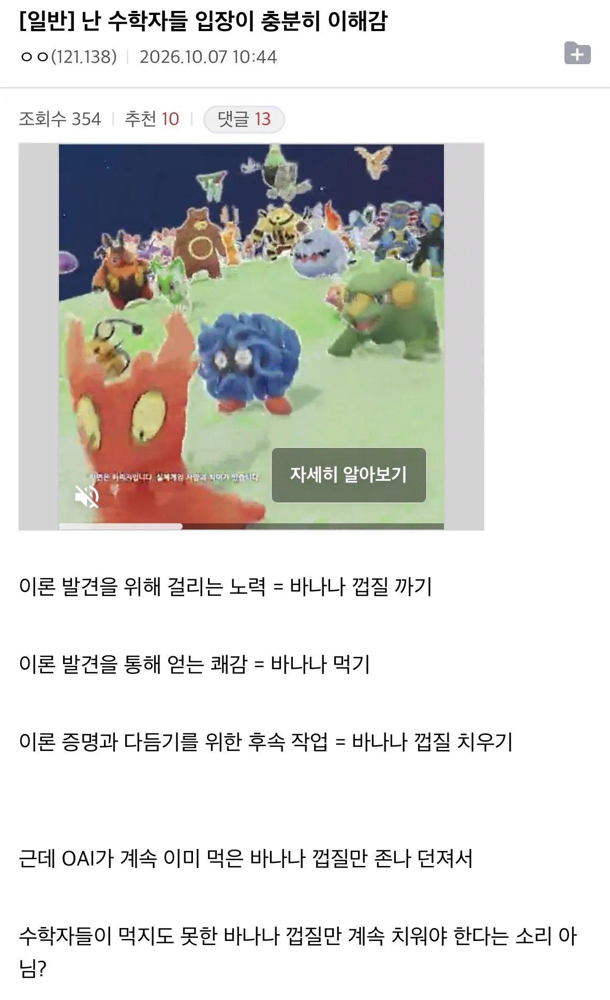
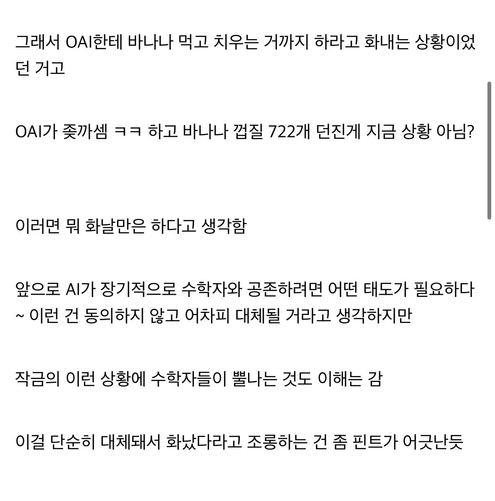

그 보다는 수학의 목적이 이해의 지평을 넓히고자 하는 건데 그냥 맞다 틀리다만 나오면 여전히 이해의 지평은 인간에게나 AI에게나 동일하게 넓혀지지 않은 상태로 남아버림.
그리고 기업이 학자들의 아이디어를 뽑아먹고 증명을 선점 한다면 학자들은 자기 아이디어가 상업적으로 도용된다고 느껴서 발표하기를 꺼리게 됨.
실제로 OpenAI가 해결하던 방식이 Tristan Buckmaster라는 기존 특정 학자와 접근법이 동일했음에도 그 사람의 기여는 포함 되지 않았음. 연구 도용이나 다름 없다는 것. 그림쟁이가 그리던 중에 밑그림만 올린 걸로 누가 AI로 여러개 완성한 뒤에 체리피킹해서 올린 것과 비슷한 상황임.
AI가 의미 있는 이론적 통찰 없이 난제를 기계적으로 풀어서 없애기만 하는 건 바다에 둘러싸여 있지만 물이 부족한 상황이라 수학 생태계를 황폐화 시키게 됨.
라는 게 테렌스 타오 같은 수학자들의 주장임.
그래도 그 깐깐한 수학자들이 컴퓨터도 일단은 일부 수학 문제를 풀 수 있다는 걸 인정했다는 사실이 어디야.
바나나도 주고 껍질도 줘야하는데 껍질‘만‘ 준다는게 빡치는거구나. 심지어 사람이면 잘못된 이론인걸 검증하면 바나나 압수자의 권위(바나나우유정도) 챙기기 가능했는데 이건 빡세 보일테고?
리뷰 코드도 공개하던가
지금 논란중 일부는 껍질 까놓은거 홀랑 먹기만 해서도 클껄?
또하나의 설거지론임 ㅋㅋㅋ
ai가 먹고 남은것들 다 설거지해서 말려놔야함 ㅋㅋㅋㅋㅋㅋㅋㅋㅋㅋㅋㅋㅋㅋㅋ
ai설거지론 ㅋㅋ
지들이 먼저 먹던가
ㄹㅇㅋㅋ
얘네는 딴소리 하고있노
먹는중이었데 ㅋㅋ
좆간은 뒷정리나하라고~
바나나 껍질 까면서 새로운 과일까는 방법도 알게되고 바나나를 다양하게 깔수있는 방법을 알게되는건데 ai때문에 그 과정이 없어지는게 문제인거
껍질까지 치우라고 계속 시켜 그럼